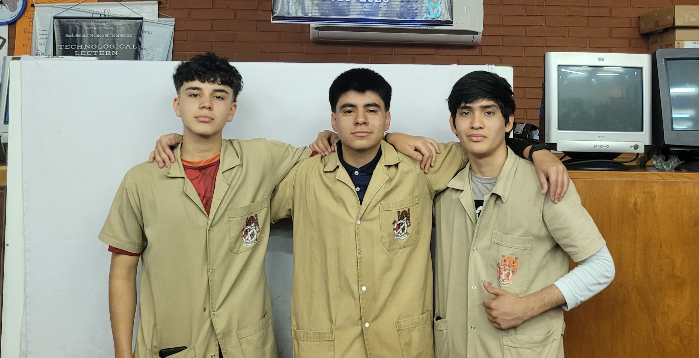
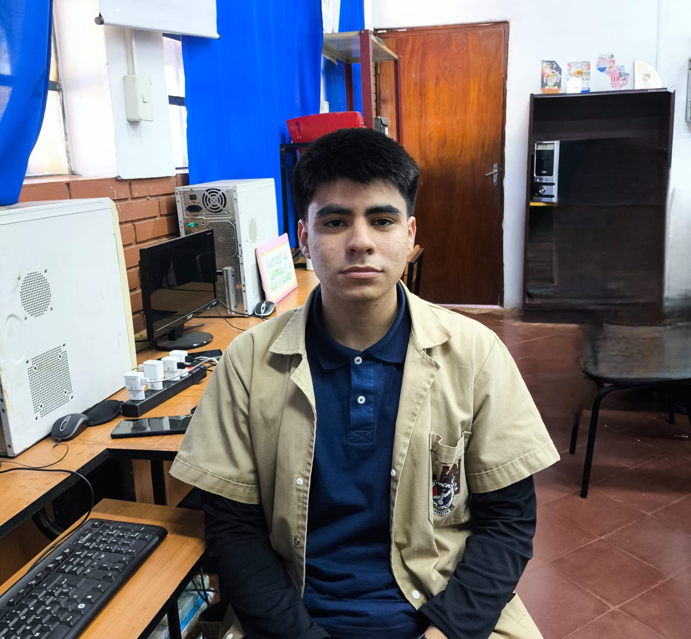
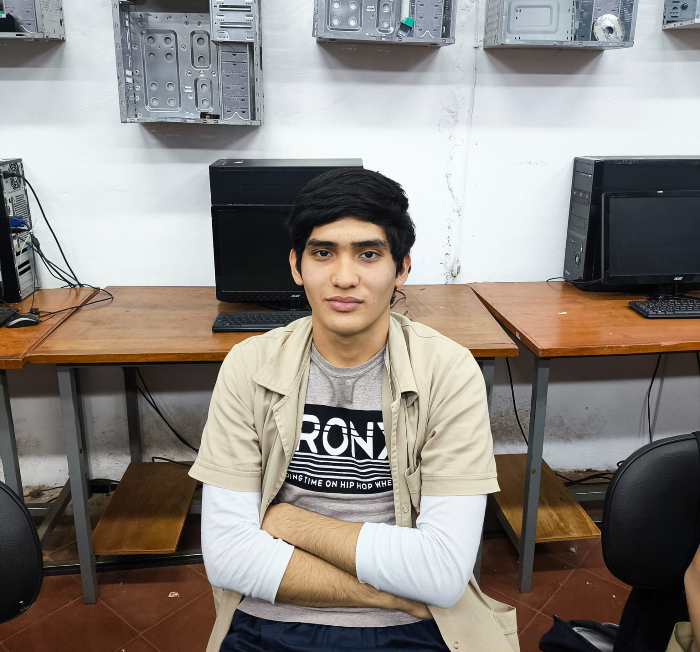
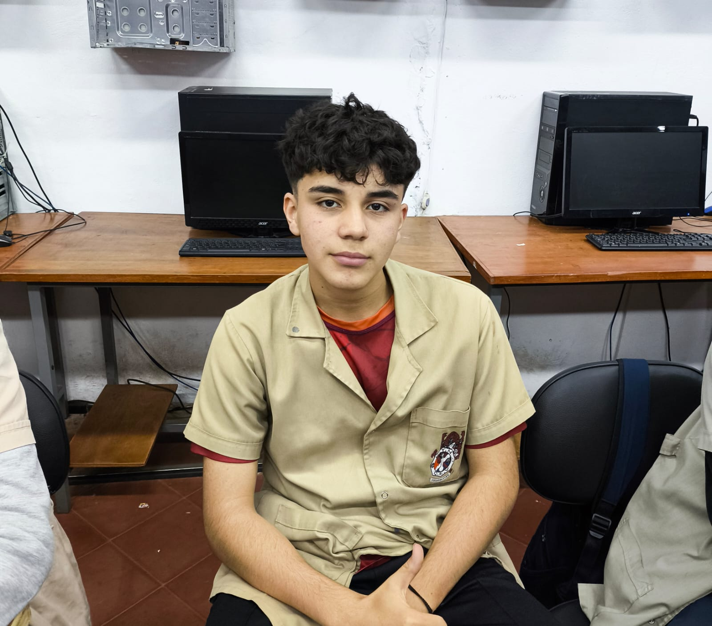

Somos un grupo de estudiantes del Colegio Técnico Nacional y Centro de Entrenamiento Vocacional Arq. Raúl María Benítez Perdomo que se ha unido con el objetivo de preservar y promover el idioma guaraní. Hemos creado este diccionario web digital para facilitar el aprendizaje de esta lengua a las generaciones futuras.

Nació el 5 de junio de 2008 en Encarnación, Paraguay. Hijo de Augusto Ramón González Amarilla y Edy Carolina Romero, quienes han sido un pilar fundamental en su vida y educación. Comenzó su educación en la Escuela Básica N° 2698 Carlos Antonio López, en General Artigas, donde cursó desde el primer hasta el sexto grado. Luego, continuó su formación en el Colegio Nacional República Oriental del Uruguay en la misma ciudad, completando allí el séptimo al noveno grado de la educación escolar básica.
Actualmente, cursa el segundo curso de bachillerato técnico en Informática en el Colegio Técnico Nacional "Arq. Raúl María Benítez Perdomo". Desde muy joven, se ha destacado por su responsabilidad, disciplina y excelencia académica.

Estudiante aplicado, amante del desarrollo de software, la programación en general, la ciberseguridad y los deportes, específicamente los deportes de contacto y las artes marciales mixtas
Oriundo de Encarnación, Paraguay, nacido el 2 de abril de 2008, hijo de Celso Nicolás López Viveros y Fátima Gricelda Leiva Fernández, Hermano de Nicolás Miguel López Leiva, quienes fueron parte fundamental en su vida tanto social como educativa. César realizó la mayor parte de su vida educativa (desde primer grado hasta noveno) en el colegio Gral. Higinio Morínigo, donde fue abanderado y tuvo participación en varias actividades, también ahí descubrió su pasión por los deportes de contacto, practicando taekwondo por un año completo, posteriormente se mudó al Colegio Técnico Nacional y Centro de Entrenamiento Vocacional "Arq. Raúl María Benítez Perdomo" en donde siguió sus estudios y su pasión por la informática.

Nacido el 5 de diciembre de 2007 en Encarnación, Itapúa. Es hijo de Nelson Pintos y Lorena Chávez, comenzó su formación en la Escuela 699 Vicepresidente Sánchez, en la Ciudad General Artigas, donde cursó hasta el quinto grado. Posteriormente, se trasladó a la Escuela 2698 Carlos Antonio López, donde completé el segundo ciclo de la educación básica. Su siguiente etapa le llevó al Colegio República Oriental del Uruguay, donde finalizó el tercer ciclo.
Actualmente, está cursando el segundo curso en la especialidad de informática en el Colegio Técnico Nacional y Centro de Entrenamiento Vocacional “Arq. Raúl María Benítez Perdomo”
A lo largo de su trayectoria educativa, ha sido reconocido como uno de los mejores alumnos en cada etapa, desde el primer grado hasta el segundo curso de bachillerato en informática
aranduneecontacto420@gmail.com
Diccionario avañe'ẽ del Profesor Lino Trinidad Sanabria